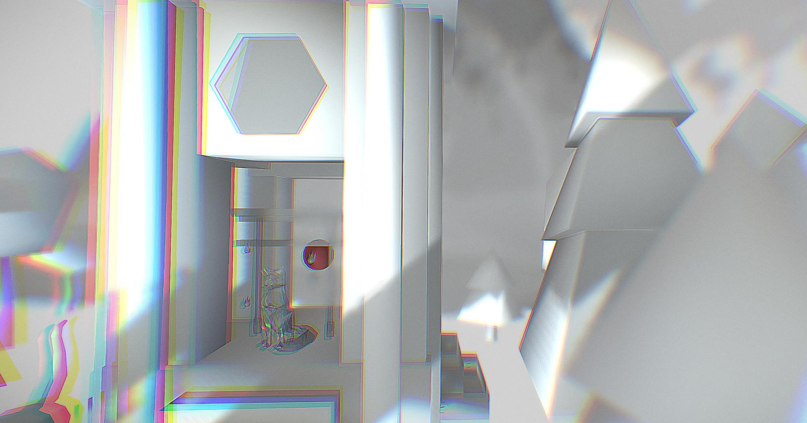
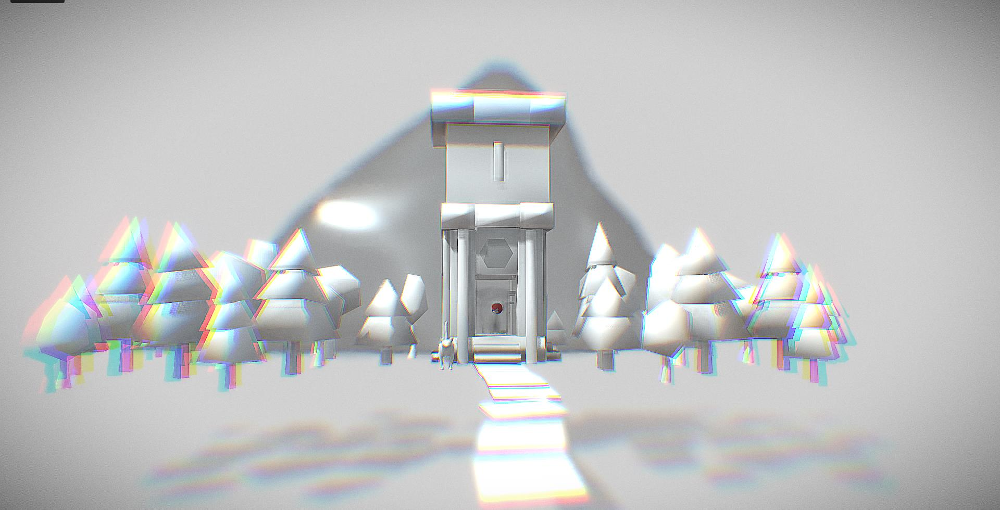

Fox Temple


Fushimi Inari-taisha is a temple located in Fushimi-ku, Kyoto,Japan. Inari Ōkami is a Kami(God) of Fushimi Inari-taisha. Inari Ōkami is the God of foxes, of fertility, rice, tea and sake, of agriculture and industry, of general prosperity and worldly success[citation needed], and one of the principal kami of Shinto. I added the sounds of ringing bell in the model because this sound effect gives me a sense of calmness and that's what I want my audiences to felt too.